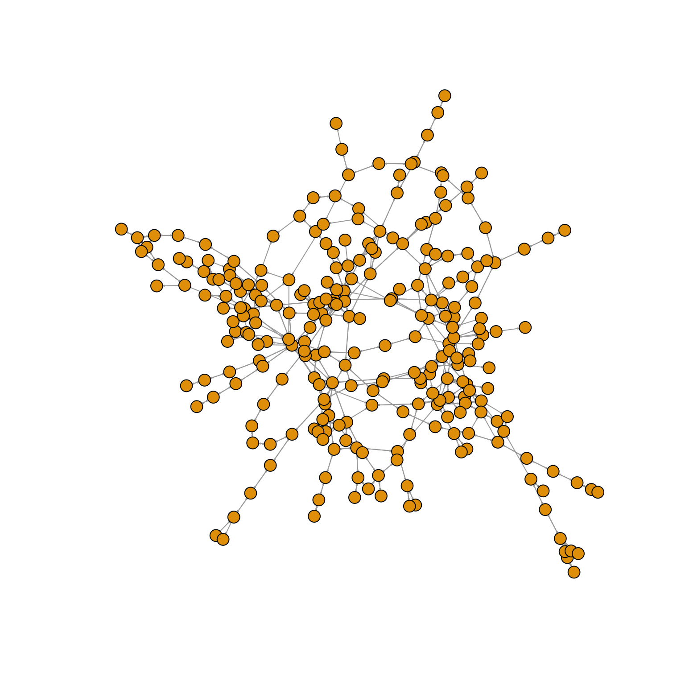
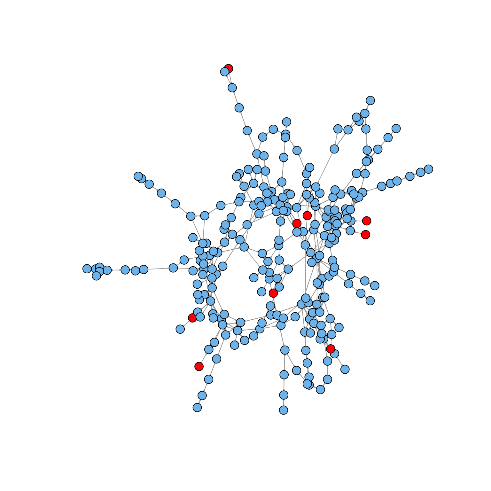

Ecology is the scientific With the rapid and inexpensive next-generation sequencing technologies The structure of complex biological systems reflects not only their function but also into the habitates in which they envoled and are adapted to. Reverse Ecology- an emerging new frontier in Evolutionary Sysmtems biology at the interface of computational biology, genomics and environmental science, which uses population genomics to study ecology with no a priori assumptions about the organism(s) under consideration. This term was suggested by Li et al. during a conference on ecological genomics in Christchurch, New Zealand. It facilitates the translation of high through genomic data into large scale ecological data, and utilizes system-based method to obtain novel insights of pooly characterized microorganisms and relationships between microorgasnims or their environments in a superorganism.Traditional approach, however, can only applied to a small scale and for ralatively well-studied systems.
This manual is a brief introduction to structure, funcitons and usage of RevEcoR package. The RevEcoR package implements the reverse ecology framework. It can be used for reconstruction of metabolic environmnets using a cross-species analysis, idenditifying the set of compounds and predicting the species interactions on a large scale with a graph-based algorithm mentioned in Borenstein et al.. The reverse ecology framework which takes advances of system biology and genomic metabolic modeling, aims to predict the ecological traits of poorly studied microorganisms, their interactions with other microorganisms, and the ecology of microbial communities from system-level analysis of complex biological networks.
Two softwares (NetSeed and NetCooperate), have developed by Borenstein’s lab for studying the ecology of microorganisms. Howevever, neither of them supports metabolic network reconstruction of species, and both are limited in small scale analysis (two species). The RevEcoR package provides an interface to microbiome reverse ecology analysis on a large scale. The main features of this package consists of several steps:
Downding metabolic networks data from KEGG database: all species metabolic network data could be downloaded from the KEGG PATHWAY datase with the KEGG REST API (application programming interface).
Reconstruction metabolic networks of all species: a directed graph whose nodes represent compounds and whose edges represent reactions linking substrates to products.
Identify seed set of a specific organism: each metabolic network was decomposed into its strongly conneted components (SCC) using Kasaraju’s algorithm. The SCC forms a directed graph whose nodes are the components and whose edges are the orginal edges in the graph that connect nodes in two different components. Then, detectting the seed set with this SCCs.
Host-microbe and microbe-microbe cooperation analysis
RevEcoR is free available on CRAN. You can install the latest released version from CRAN as following:
install.packages("RevEcoR") or the latest development version from github. To install packages from GitHub, you first need install the devtools package on your system with install.packages("devtools"). Note that devtools sometimes needs some extra non-R software on your system – more specifically, an Rtools download for Windows or Xcode for OS X. There’s more information about devtools here.
if (!require(devtools)
install.packages("devtools")
devtools::install_github("yiluheihei/RevEcoR") After installation, you can load RevEcoR into current workspace by typing or pasting the following codes:
library(RevEcoR) Both the Kyoto Encyclopedia of Genes and Genomes (KEGG) and Integrated Microbial Genomes database (IMG) [7] collect complete high-quality genome sequences and metagenome sequences with a comprehensive set of publicly available bacterial, archaeal, eukaryotic, and phage genomes, as well as engineered, environmental and host associated metagenome samples. All the sequences and functional annotation profile can be download directly.
The KEGG database provides a REST-style API compared with IMG database. This package provides function getOrgMetabolicData to download the specific organism metabolic data from KEGG database, and return a list where each element consists of three elements: reaction, substrate and product. Data in IMG, we can only download it manually. In addition, users can annotate their private genomic data with KO terms on IMG systems or in their local machine to obtain the annotation profile.
## download sample metabolic data from remote KEGG database
buc <- getOrgMetabolicData("buc")
data(kegg_buc)
head(buc) ## Reconstruction of organism metabolic network
The crucial premise of Reverse Ecology is that genomic information can be converted into ecological information. Metabolism linking miroorgasnim with the biochemical environmnet acrossing compound exchanges: import of exogenous compounds and impact the composition of its environment via secretion of other compounds. Thus, metabolic network is the reflection of interation between organisms and their environment.
Graph-based representation of metabolic reactions where nodes represent compounds and edges represent reactions is a common tool in analyzing and studing metabolic networks. A directed edge from node a to b indicates that compound a is a substrate in some reaction that produces compound b.
Once the metabolic data is obtained, reconstructGsMN could be used to reconstruction the metabolic network of a specific organism.
## species in KEGG
buc.net <- reconstructGsMN(kegg_buc, RefData = NULL)
igraph::print.igraph(buc.net) ## IGRAPH DN-- 259 681 --
## + attr: name (v/c)
## + edges (vertex names):
## [1] cpd:C00022->cpd:C00002 cpd:C00022->cpd:C00008 cpd:C00022->cpd:C00074
## [4] cpd:C00022->cpd:C00024 cpd:C00022->cpd:C06010 cpd:C00022->cpd:C00109
## [7] cpd:C00022->cpd:C00118 cpd:C00022->cpd:C00900 cpd:C00022->cpd:C05125
## [10] cpd:C00022->cpd:C06006 cpd:C00022->cpd:C11437 cpd:C00068->cpd:C01081
## [13] cpd:C00068->cpd:C05125 cpd:C00068->cpd:C05381 cpd:C04332->cpd:C00255
## [16] cpd:C04332->cpd:C04732 cpd:C04332->cpd:C15556 cpd:C00255->cpd:C04332
## [19] cpd:C00255->cpd:C00061 cpd:C00255->cpd:C04732 cpd:C00003->cpd:C00006
## [22] cpd:C00003->cpd:C00455 cpd:C00003->cpd:C00857 cpd:C00006->cpd:C00003
## + ... omitted several edgesigraph::plot.igraph(buc.net, vertex.label=NA, vertex.size=5, edge.arrow.size=0.1)
## ko annotation profile species detected in a human microbiome in IMG (not in KEGG)
annodir <- system.file("extdata/koanno.tab",package = "RevEcoR")
metabolic.data <- read.delim(annodir,stringsAsFactors=FALSE)
##load the reference metabolic data
data(RefDbcache)
g2 <- reconstructGsMN(metabolic.data, RefData = RefDbcache) As the interactions with the environment was reflected in the metabolic networks, these networks could be used not only to infer metabolic function but alse to obtain insights into the growth environments in which the species evolved.
Apparantly, organisms can survive in a wide range of enviromnets and may activate only a subset of the pathways in the network of each environment, using a different set of exogenously acquired compounds (termed seed set). The seed set of the network is defined as the minimal set of compounds in the network that allows the synthesis of all other compouds, and can serve as a good proxy for its environment and can be conceived as the essential and effective biochemical environment.
getSeedSets was used to detect the seed set of a metabolic network which returns a seedset-class object. Futhermore, some methods was supported for seedset-class, e.g length, nonseeds. For more details on seedset-class, see ?seedset-class.It can help us to get the compound that organisms are exogenously acquired compouds from the environment, representing the organism’s nutritional profile. This algorithm is based on a fast method Kasaraju algorithm for SCC decomposition which is implementaed in Kasaraju. For more details, see ?getSeedSets and ?KasarajuSCC.
## seed set prediction
seed.set <- getSeedSets(buc.net, 0.2)
show(seed.set) ## Object of class seedset
## IGRAPH: -- 259 nodes 681 edges --
## seedset length 9head(seed.set@seeds)## [[1]]
## [1] "cpd:C15532"
##
## [[2]]
## [1] "cpd:C15811"
##
## [[3]]
## [1] "cpd:C05729"
##
## [[4]]
## [1] "cpd:C00993"
##
## [[5]]
## [1] "cpd:C00031"
##
## [[6]]
## [1] "cpd:C00392"## The node colored with red represents the species' seed set
nodes <- igraph::V(buc.net)$name
seeds <- unlist(seed.set@seeds)
seed.index <- match(seeds,nodes)
node.color <- rep("SkyBlue2",length(nodes))
node.color[seed.index] <- "red"
igraph::plot.igraph(buc.net,
vertex.label=NA, vertex.size=5, edge.arrow.size=0.1,
vertex.color = node.color)
The topology of metabolic networks can provide insight not only into the metabolic process that accur within each species, but also into interactions between different species. Here we provides calculateCoopreationIndex using three cooperation index: competition index, coplementarity index measure the microbe-microbe co-occurrence pattern. More details, see ?calculateCoopreationIndex.
# ptr metabolic network
data(kegg_ptr)
##ptr.net <- reconstructGsMN(getOrgMetabolicData("ptr"))
ptr.net <- reconstructGsMN(kegg_ptr)
# cooperation analysis between buc and ptr
cooperation.index <- calculateCooperationIndex(buc.net,ptr.net)
cooperation.index ## $competition.index
## [,1] [,2]
## [1,] 1.00000000 0.1818182
## [2,] 0.03571429 1.0000000
##
## $complementarity.index
## [,1] [,2]
## [1,] 0.00000000 0.4545455
## [2,] 0.07142857 0.0000000Blow we applied RevEcoR to predict interactions among several human oral microbiota species whose co-occurrence patterns have previously been described. Our seven sample oral species metabolic dataset was downloaded from the IMG server; it consists of the following Genomes Online Database (GOD) IMG identification numbers: Gc0016386, Gi07614, Gi00264, Gc00809, Gc00643, Gi03876, and Gi07289. The interactions among the seven species is calculated as follwing:
The metabolic networks of seven species was reconstructed first:
##metabolic network reconstruction of these seven species
net <- lapply(anno.species, reconstructGsMN)Then caculateCooperationIndex is used to calculated the species interactions among the seven species.
## caculate interactions among vious species
interactions <- calculateCooperationIndex(net, p = TRUE)
## competition index
$competition.index
Aa Ao Fn Pg Sg So Va
Aa 1.0000000 0.4736842 0.3157895 0.2280702 0.4210526 0.4385965 0.2456140
Ao 0.4736842 1.0000000 0.3684211 0.3333333 0.4736842 0.4736842 0.2456140
Fn 0.5000000 0.5833333 1.0000000 0.4166667 0.5833333 0.5555556 0.4166667
Pg 0.4193548 0.6129032 0.4838710 1.0000000 0.6129032 0.5161290 0.3870968
Sg 0.5454545 0.6136364 0.4772727 0.4318182 1.0000000 0.9090909 0.3863636
So 0.5813953 0.6046512 0.4651163 0.3720930 0.9302326 1.0000000 0.3953488
Va 0.4827586 0.4827586 0.5172414 0.4137931 0.5862069 0.5862069 1.0000000
## p value of competition index
$competition.index.p
Aa Ao Fn Pg Sg So Va
Aa 0.000 0.001 0.001 0.001 0.001 0.001 0.001
Ao 0.001 0.000 0.001 0.001 0.001 0.001 0.001
Fn 0.001 0.001 0.000 0.001 0.001 0.001 0.001
Pg 0.001 0.001 0.001 0.000 0.001 0.001 0.001
Sg 0.001 0.001 0.001 0.001 0.000 0.001 0.001
So 0.001 0.001 0.001 0.001 0.001 0.000 0.001
Va 0.001 0.001 0.001 0.001 0.001 0.001 0.000
## complementarity index
$complementarity.index
Aa Ao Fn Pg Sg So Va
Aa 0.0000000 0.1052632 0.1228070 0.07017544 0.0877193 0.08771930 0.1228070
Ao 0.1403509 0.0000000 0.1403509 0.07017544 0.1228070 0.12280702 0.1403509
Fn 0.1944444 0.1666667 0.0000000 0.16666667 0.1111111 0.11111111 0.1388889
Pg 0.2258065 0.2258065 0.1612903 0.00000000 0.1612903 0.19354839 0.2258065
Sg 0.2272727 0.1818182 0.1590909 0.09090909 0.0000000 0.04545455 0.1590909
So 0.1860465 0.1395349 0.1860465 0.09302326 0.0000000 0.00000000 0.1395349
Va 0.2068966 0.1724138 0.1379310 0.17241379 0.1379310 0.13793103 0.0000000
## p value of complementarity index
$complementarity.index.p
Aa Ao Fn Pg Sg So Va
Aa 0.000 0.001 0.001 0.001 0.001 0.001 0.001
Ao 0.001 0.000 0.001 0.001 0.001 0.001 0.001
Fn 0.001 0.001 0.000 0.001 0.001 0.001 0.001
Pg 0.001 0.001 0.001 0.000 0.001 0.001 0.001
Sg 0.001 0.001 0.001 0.001 0.000 0.001 0.001
So 0.001 0.001 0.001 0.001 0.001 0.000 0.001
Va 0.001 0.001 0.001 0.001 0.001 0.001 0.000We found that Streptococcus oralis (So) and Streptococcus gordonii (Sg) had the lowest complementarity index (0.04 and 0.00, respectively) and the highest competition index (0.91 and 0.93, respectively) among all pairs. Appanrently, the p value of all interactions are biologcial/statistical significance. This indicates that these two species are antagonistic, which is consistent with previous findings.
To further evaluate the predicted interactions of RevEcoR on a large scale, we integrated functions mentioned above to investigate species interactions in the gut microbiome. We focused on a list of 116 prevalent gut species, whose genome sequence is available in IMG database and sequence coverage is more than 1% in at least one metagenomic sample of 124 individuals. Genome annotation profiles of this 116 species was collected from IMG database and was used to calculated the interactions (competition and complementarity index) for all pairs of species.
For each species, we download the list of genes mapped to the Kyoto Encyclopedia of Genes and Genomes orthologous groups (KOs) was downloaded with a in-house R script. This data, which was used to reconstruct the metabolic network of each species, have been saved as gut_microbiome.rda in subdirectory data of RevEcoR. We can load it as the following code:
data(gut_microbiome)
## summary(gut_microbiome) Then, it was used to reconstuct the metabolic network, predict the seed set, and finally predict the pairs of interactions between different species:
gut.nets <- lapply(gut_microbiome,reconstructGsMN)
seed.sets <- lapply(gut.nets,getSeedSets)
## Since calculation is on large scale, species interactions prediction may take several hours
gut.interactions <- calculateCooperationIndex(gut.nets)
competition.index <- gut.interactions$competition.index
complementarity.index <- gut.interactions$complementarity.indexSpecially, it will help us to predict whether species compete with one another tend to co-occur or to exclude by comparing the species interactions and co-occurrences. We obtained co-occurrence scores directly from Levy R’s research, and saved it as occurence.tab in subdirectory inst/extdata of RevEcoR . Co-occurrence score was calculated based on species abundances across all samples and measured by the Jaccard similarity index.
Load the co-occurrence data:
occurrence.score <- read.delim(system.file("extdata/occurrence.tab",
package = "RevEcoR"),stringsAsFactors = FALSE, quote = "")The Jaccard index measures similarity between finite sample sets, and is defined as the size of the intersection divided by the size of the union of the sample sets. Thus, co-occurrence scores are generally symmetric whereas competition index or complementarity index are not according to their definitions.
A symmetric version of two interaction index was gnerated by replacing each element of the interaction indices with the mean of each value and that transpose value.
competition.index <- (competition.index + t(competition.index))/2
complementarity.index <- (complementarity.index + t(complementarity.index))/2Subsequently, the Spearman correlation between the co-occurrence scores and the two interaction indices was calculated. A permutation-based Mantel test, which is commonly used in ecology, was used to determin the significance of this correlation.
## upper triangles, which is used to calculate the correlation
competition.upper <- competition.index[upper.tri(competition.index)]
occurrence.upper <- occurrence.score[upper.tri(occurrence.score)]
complementarity.upper <- complementarity.index[upper.tri(complementarity.index)]
## calculate the spearman correlation betwwen co-occurrence scores and two
## interactions indices
competition.cor <- cor(competition.upper,occurrence.upper,method="spearman")
complementarity.cor <- cor(complementarity.upper,occurrence.upper,method="spearman")
## permutation-based mantel test. Random permutation the co-occurance score
## 10000 times, P value is the fraction of correlations as high as or higher
## than the original
if (require(magrittr)){
null.stat <- replicate(10000,
sample(1:116) %>% occurrence.score[.,.] %>%
.[upper.tri(.)]
)
competition.null <- cor(competition.upper,null.stat)
complementarity.null <- cor(complementarity.upper,null.stat)
length(which(competition.null >= competition.cor)) ## 0 p.competition < 0.00001
length(which(complementarity.null <= complementarity.cor)) ## 0 p.complementarity< 0.00001
}We found that competition index is significant positively correlated with co-occurrence (cor = 0.261, P < 10-4, Mantel correlation test), whereas the complementarity index is significant negatively correlated with co-occurrence (cor = -0.259, P < 10-4, Mantel correlation test). This suggests that competition is liked to be the key factor to promote the assembly of gut microorganisms
The version number of R and packages loaded for generating the vignette were:
sessionInfo() ## R version 3.3.2 (2016-10-31)
## Platform: x86_64-apple-darwin13.4.0 (64-bit)
## Running under: macOS Sierra 10.12.1
##
## locale:
## [1] zh_CN.UTF-8/zh_CN.UTF-8/zh_CN.UTF-8/C/zh_CN.UTF-8/zh_CN.UTF-8
##
## attached base packages:
## [1] stats graphics grDevices utils datasets methods base
##
## other attached packages:
## [1] knitr_1.15 RevEcoR_0.99.3 pkgdown_0.1.0.9000
## [4] devtools_1.12.0.9000
##
## loaded via a namespace (and not attached):
## [1] Rcpp_0.12.8 git2r_0.15.0 plyr_1.8.3
## [4] tools_3.3.2 highlight_0.4.7 digest_0.6.10
## [7] pkgbuild_0.0.0.9000 pkgload_0.0.0.9000 memoise_1.0.0
## [10] evaluate_0.10 tibble_1.2-12 lattice_0.20-34
## [13] Matrix_1.2-7.1 igraph_1.0.1 curl_2.1
## [16] yaml_2.1.14 withr_1.0.2 httr_1.2.1
## [19] stringr_1.1.0.9000 roxygen2_5.0.1 xml2_1.0.0.9001
## [22] desc_1.0.1 gtools_3.5.0 rprojroot_1.1
## [25] grid_3.3.2 R6_2.2.0 XML_3.98-1.4
## [28] rmarkdown_1.1.9017 callr_1.0.0.9000 purrr_0.2.2.9000
## [31] magrittr_1.5 whisker_0.3-2 backports_1.0.4
## [34] htmltools_0.3.5 assertthat_0.1 stringi_1.1.2
## [37] lazyeval_0.2.0.9000 crayon_1.3.2